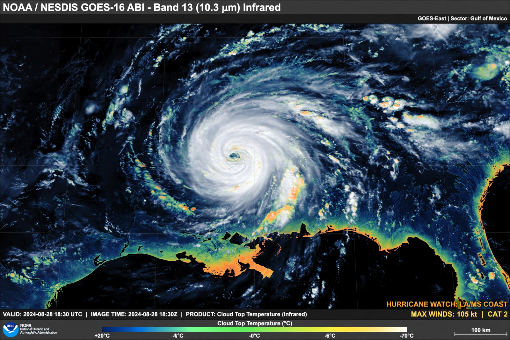

National Oceanic and Atmospheric Administration
| National Oceanic and Atmospheric Administration | |
|---|---|
| Formed | 3 October 1970 |
| Headquarters | Silver Spring, Maryland |
| Parent agency | US Department of Commerce |
| Includes | National Weather Service; NESDIS; National Ocean Service; NOAA Fisheries |

The National Oceanic and Atmospheric Administration (NOAA) is a United States federal agency, within the Department of Commerce, responsible for the conditions of the oceans, major waterways and the atmosphere. Its motto-style summary is science, service and stewardship — 'from the surface of the sun to the depths of the ocean floor'.
NOAA operates the National Weather Service, the US weather satellite fleet, fisheries management, ocean and coastal science, and the nation's climate records.
What NOAA does
The National Weather Service issues the forecasts and storm warnings that Americans rely on daily, fed by NOAA's GOES geostationary and polar-orbiting satellites and its radar network. Other branches chart the coasts and manage navigation safety, regulate fisheries and protect marine mammals and sanctuaries, research the ocean and atmosphere (including the {L('El_Niño')} monitoring system in the Pacific), and maintain the official US climate data archive.
NOAA also runs a uniformed service, the NOAA Corps, and research ships and aircraft — including the 'hurricane hunter' planes that fly into tropical cyclones.
Climate role
NOAA's global temperature and ocean datasets are among the principal records used to track Global warming, and its laboratories (such as the Mauna Loa Observatory partnership that produced the Keeling Curve) monitor greenhouse gases. Its seasonal outlooks and ENSO forecasts guide farmers, water managers and emergency planners worldwide. See Meteorology and Ocean.
See also: Meteorology · Ocean · Climate change · El Niño · United States